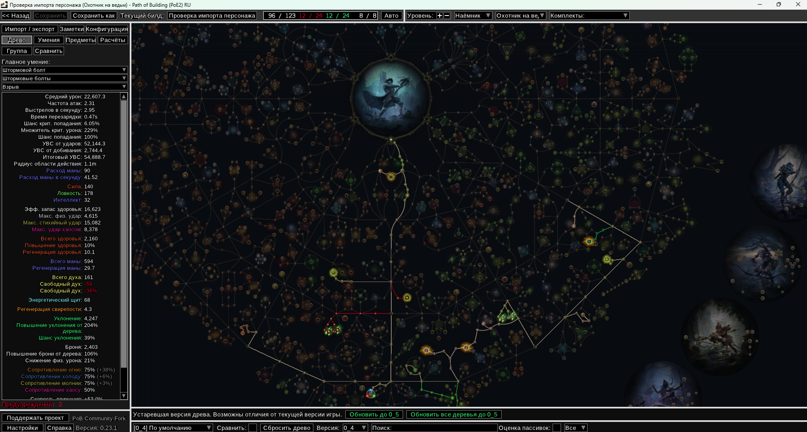

Знакомые названия
Интерфейс, дерево, камни и предметы — с названиями и формулировками русского клиента PoE 2.
Path of Exile 2 · Русская версия PoB
От первого узла до последнего предмета.
Планируйте персонажа с названиями из русской игры.
Бета 2PoB 0.23.1Данные PoE 2 0.5.5g

Интерфейс, дерево, камни и предметы — с названиями и формулировками русского клиента PoE 2.
Открывайте привычные коды PoB. Ищите пассивки, умения и предметы на русском или английском.
Импортируйте персонажа, подбирайте вещи через торговый поиск и сравнивайте их со своей экипировкой.
Начало пути
Нажмите «Скачать для Windows». Архив содержит готовую переносимую сборку; устанавливать ничего не нужно.
Распакуйте архив в отдельную папку с доступом на запись и откройте Path of Building-PoE2.exe. Русский уже включён.
Во вкладке «Импорт / экспорт» вставьте код или ссылку на билд. Можно также войти в свой аккаунт PoE и импортировать персонажа.
Выберите главное умение и проверьте условия расчёта. Урон в PoB зависит от выбранных камней, экипировки и настроек билда.
Перед началом
Билды, обновления
и границы перевода.
Эта сборка предназначена для Path of Exile 2. Она основана на PoB 0.23.1 и использует игровые данные 0.5.5g. Для первой PoE нужна другая программа.
Да, русская сборка принимает обычные коды PoB для PoE 2. Перевод подставляется при отображении, а идентификаторы, формат билдов и исходные данные расчётов сохраняются. Поиск работает на русском и английском.
Совместимость с билдами из будущих версий зависит от исходной PoB и версии игровых данных.
Для работы программы запущенная игра не нужна. Билды хранятся в папке Builds, настройки — в Settings.xml рядом с программой. Для импорта персонажа и торгового поиска потребуется доступ к сервисам GGG.
Переведены интерфейс, текущее дерево, названия камней, основные описания умений, базы и уникальные предметы, свойства и стандартные имена редких и волшебных вещей.
Это бета: остаются отдельные скрытые эффекты и исторические данные, а неизвестные и пользовательские строки могут сохранять исходный язык. Точное покрытие и оставшиеся случаи перечислены в отчёте о проверке.
Скачивайте новые выпуски из Releases этого проекта. Новый архив распакуйте отдельно и перенесите нужные билды из Builds. Обычное обновление исходной PoB отключено, чтобы сохранить локализацию.
Поддерживаемая версия игры указана рядом со скачиванием. Обновление под PoE 2 1.0 потребует отдельного выпуска и повторной проверки.
Откройте Issue на GitHub или напишите в теме проекта на форуме. Укажите версию сборки и шаги воспроизведения, приложите скриншот. Для сравнения с игрой полезны её версия и оригинальное имя объекта.
Начните с вашего персонажа
Path of Building для PoE 2 · Русская локализация